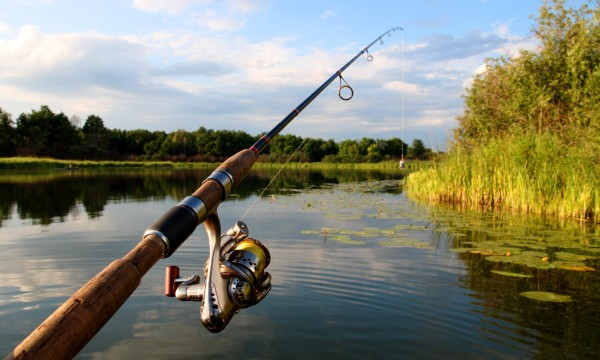

Cannes à Pêche
Canne à Pêche en Carbone
Une canne légère et résistante, parfaite pour les longues sessions de pêche, idéale pour la pêche au brochet, perche, sandre, et peut combattre un silure.
Prix: 74,99 €
Canne à Pêche Télescopique
Facile à transporter, idéale pour les pêcheurs en déplacement et solide pour son petit gabarit.
Prix: 49,99 €